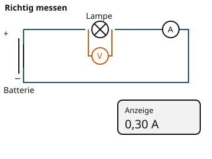

Stromstärke und Spannung
Warum ist das wichtig?
An einer Lampe hängen zwei Messgeräte. Das eine zeigt 0,30 A, das andere 4,5 V. Beide gehören zum selben Stromkreis, aber sie messen nicht dasselbe. Wer Stromstärke und Spannung verwechselt, schließt Messgeräte falsch an und liest die falschen Werte ab.
Das steckt dahinter
Die Stromstärke gibt an, wie viel Ladung pro Sekunde durch einen Leiterquerschnitt fließt. Ihre Einheit ist das Ampere (). Die Spannung gibt an, wie stark die Quelle den Strom antreibt; sie liegt immer zwischen zwei Punkten an. Ihre Einheit ist das Volt ().

Das Amperemeter wird in den Weg geschaltet, das Voltmeter parallel zur Lampe. Das Display zeigt eine Stromstärke von 0,30 A.
Quelle: eigene Zeichnung. Lizenz: CC-BY-4.0.| Größe | Formelzeichen | Einheit | Messgerät | Anschluss |
|---|---|---|---|---|
| Stromstärke | Ampere (A) | Amperemeter | in Reihe | |
| Spannung | Volt (V) | Voltmeter | parallel |
- Stromstärke
Die Stromstärke gibt an, wie viel elektrische Ladung in einer Sekunde durch einen Leiterquerschnitt fließt. Einheit: Ampere (A).
- Spannung
Die Spannung ist der Antrieb zwischen zwei Punkten eines Stromkreises. Einheit: Volt (V).
Ein Amperemeter schließt du in Reihe an: Der Strom fließt hindurch. Ein Voltmeter schließt du parallel zu dem Bauteil an, dessen Spannung du messen willst. Für kleine Ströme nutzt du Milliampere: . Für große Spannungen nutzt du Kilovolt: .
Ein Beispiel
Eine Lampe an einer Batterie
Eine Lampe liegt an einer Batterie mit 4,5 V. Das Amperemeter zeigt 0,30 A. Die Spannung beträgt also 4,5 V, die Stromstärke 0,30 A. In Milliampere sind das 300 mA, denn du rechnest 0,30 · 1000.
| Spannung | 4,5 V |
|---|---|
| Stromstärke | 0,30 A |
| Stromstärke in mA | 300 mA |
Übung
Übung
Lösung
Richtige Antwort: Stromstärke – Ampere, gemessen mit dem Amperemeter; Spannung – Volt, gemessen mit dem Voltmeter; Milliampere – Ein tausendstel Ampere; Kilovolt – Tausend Volt
Die Stromstärke misst du in Ampere mit dem Amperemeter, die Spannung in Volt mit dem Voltmeter. mA und kV sind kleinere bzw. größere Einheiten.
Mehr dazu:
Übung
Lösung
In Reihe mit der Lampe, sodass der Strom durch das Messgerät fließt. richtige Antwort
Das Amperemeter gehört in den Stromweg. Nur so fließt der ganze Strom durch das Gerät.
Parallel zur Lampe, wie ein Voltmeter.
Parallel geschaltet misst das Gerät die Spannung, nicht die Stromstärke. Außerdem kann ein Amperemeter dabei einen Kurzschluss verursachen.
Nur an den Pluspol der Batterie, ohne Verbindung zur Lampe.
Dann ist der Kreis nicht geschlossen. Strom kann nur durch das Gerät fließen, wenn es im geschlossenen Kreis liegt.
Ein Amperemeter wird in Reihe geschaltet, weil der Strom hindurchfließen muss. Ein Voltmeter wird parallel geschaltet.
Mehr dazu:
Übung
Lösung
Richtige Antwort: 0,3 A (erlaubte Abweichung: 0,01 A)
Das Display zeigt 0,30 A. Das ist eine Stromstärke, keine Spannung.
Mehr dazu:
Übung
Drei Beispielaufgaben, jede mit ihrer Lösung:
Aufgabe Nr. 1
Rechne 100 mA in Ampere um.
Tipp
1 A sind 1000 mA. Aus mA wird A, indem du durch 1000 teilst.
Lösung
Richtige Antwort: 0,1 A (erlaubte Abweichung: 0,0001 A)
Aufgabe Nr. 2
Rechne 600 mA in Ampere um.
Tipp
1 A sind 1000 mA. Aus mA wird A, indem du durch 1000 teilst.
Lösung
Richtige Antwort: 0,6 A (erlaubte Abweichung: 0,0001 A)
Aufgabe Nr. 3
Rechne 300 mA in Ampere um.
Tipp
1 A sind 1000 mA. Aus mA wird A, indem du durch 1000 teilst.
Lösung
Richtige Antwort: 0,3 A (erlaubte Abweichung: 0,0001 A)
Übung
Drei Beispielaufgaben, jede mit ihrer Lösung:
Aufgabe Nr. 1
Rechne 10 kV in Volt um.
Tipp
1 kV sind 1000 V.
Lösung
Richtige Antwort: 10.000 V
Aufgabe Nr. 2
Rechne 4,5 kV in Volt um.
Tipp
1 kV sind 1000 V.
Lösung
Richtige Antwort: 4.500 V
Aufgabe Nr. 3
Rechne 2 kV in Volt um.
Tipp
1 kV sind 1000 V.
Lösung
Richtige Antwort: 2.000 V